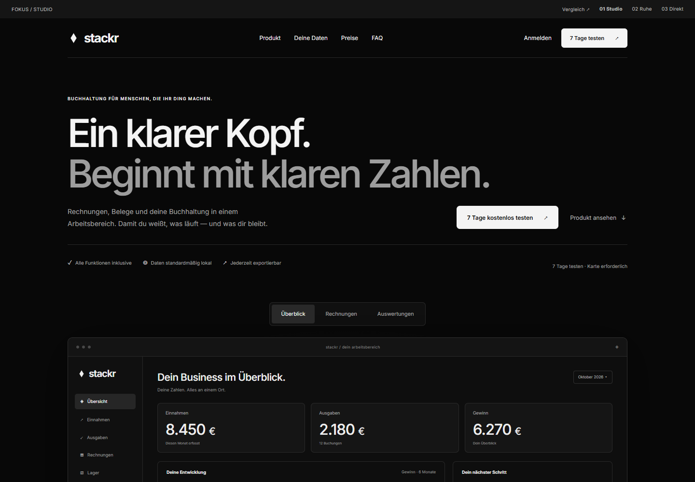
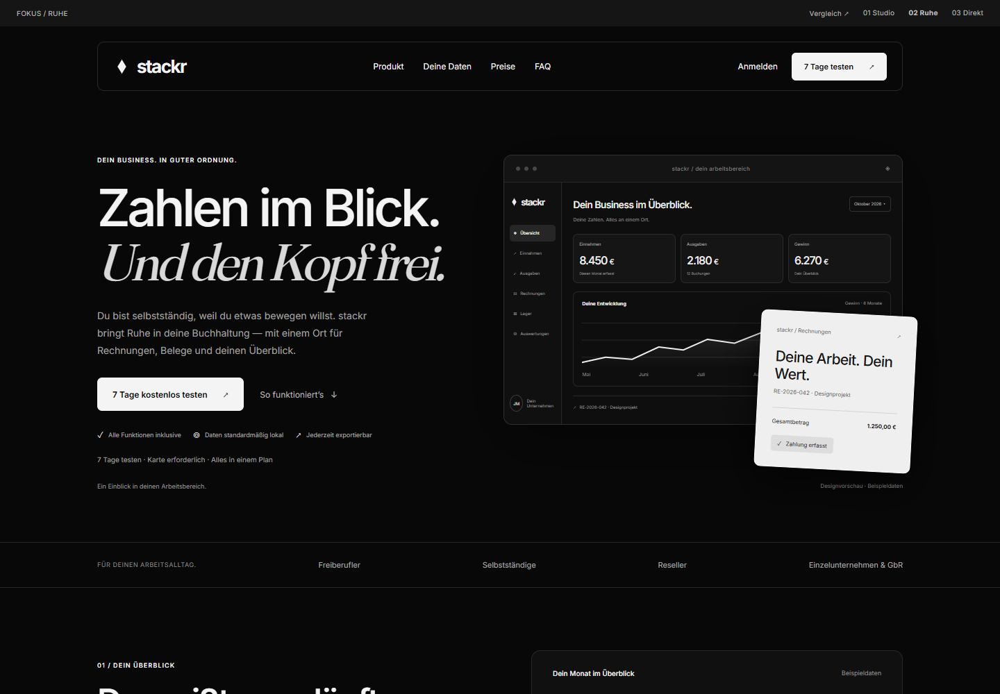
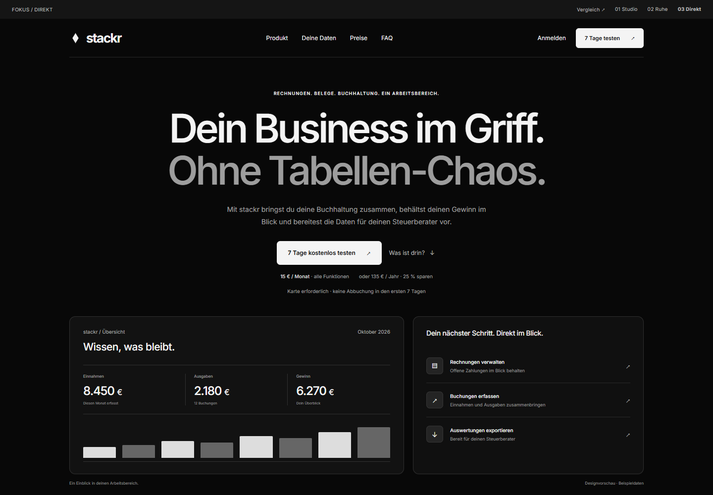

FOKUS 01 / PRODUKT / PRÄZISION
Studio.
Die direkte Weiterentwicklung von Fokus: große Typografie, eine breite Produktbühne und drei wechselbare Ansichten.
Entwurf ansehen ↗Schwarz-weiß. Ruhig. Auf das Wesentliche reduziert. Drei neue Landing Pages auf Basis deines Favoriten — mit unterschiedlichen Produktansichten und Wegen zum Ausprobieren.

Die direkte Weiterentwicklung von Fokus: große Typografie, eine breite Produktbühne und drei wechselbare Ansichten.
Entwurf ansehen ↗
Persönlicher Einstieg, viel Raum und eine helle Rechnung auf dunklem Grund. Die Funktionen werden Schritt für Schritt erklärt.
Entwurf ansehen ↗
Kompakter Einstieg, Preis früh sichtbar und ein klarer Weg von deinen täglichen Aufgaben zum vollständigen Plan.
Entwurf ansehen ↗Die Vorbilder liefern Impulse für Produktdarstellung, Nutzenargumente und Nutzerführung. Sie dienen als Designreferenzen; gemessene Conversion-Raten dieser Seiten liegen uns nicht vor.
Klare Typografie, sichtbares Produkt und Funktionen im Zusammenhang. Für Studio wird daraus eine breite, interaktive Produktvorschau.
Ein ruhiger Einstieg und klare Wege zu Anmeldung und Demo. Für Ruhe übertragen wir das auf einen persönlichen Texteinstieg mit einer kompakten Finanzansicht.
Ein konkretes Nutzenversprechen und ein direkter Einstieg. Bei Direkt stehen deshalb Aufgaben, Preis und Testphase früh im Blick.